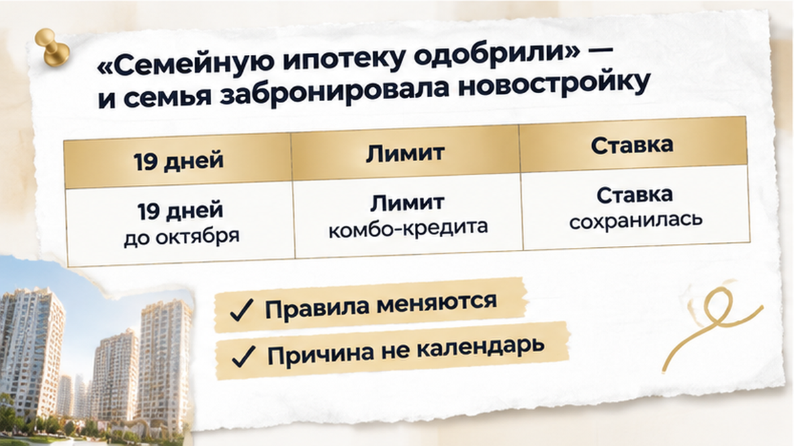
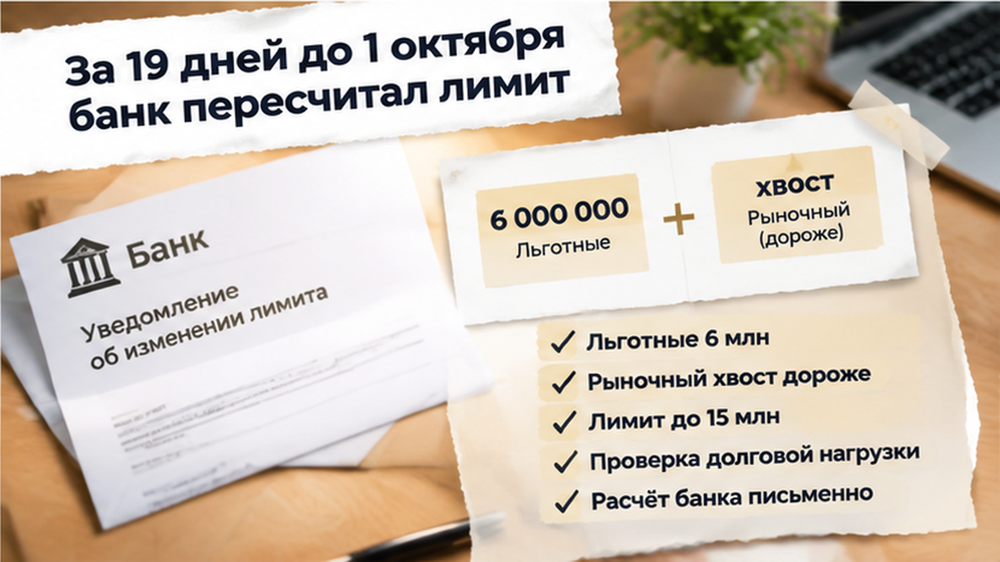
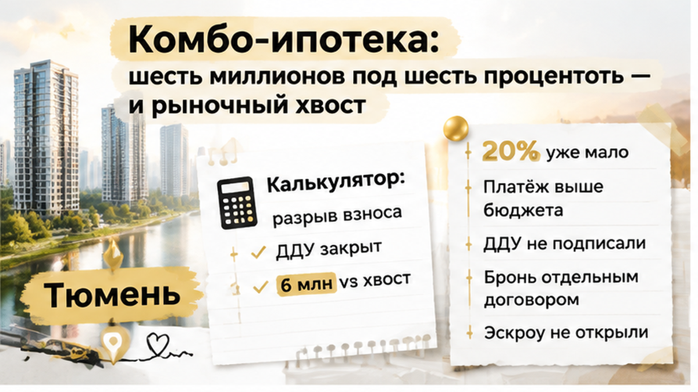
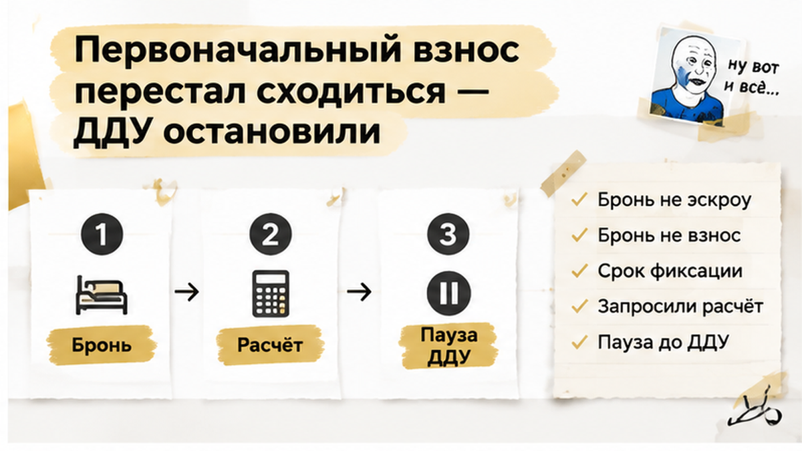
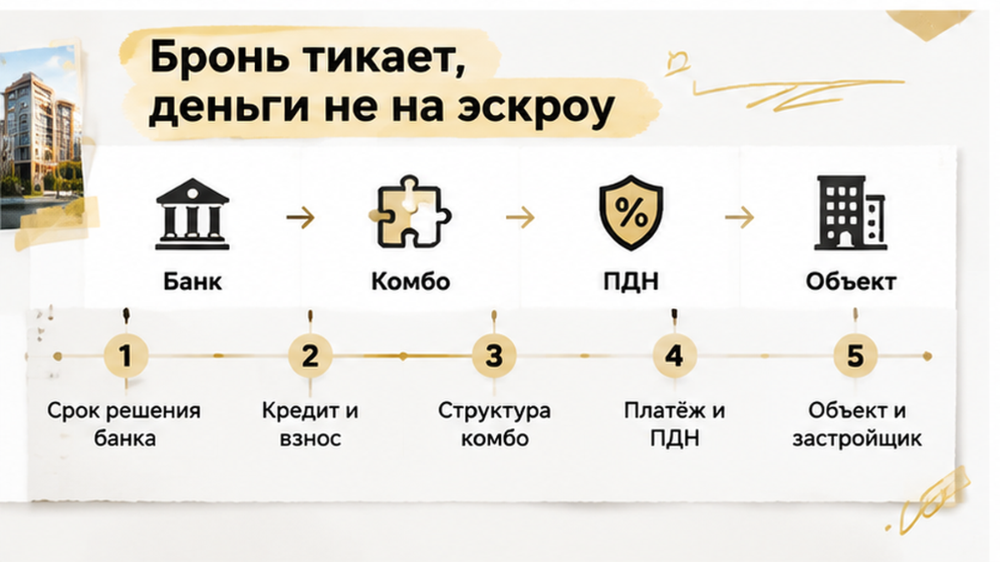
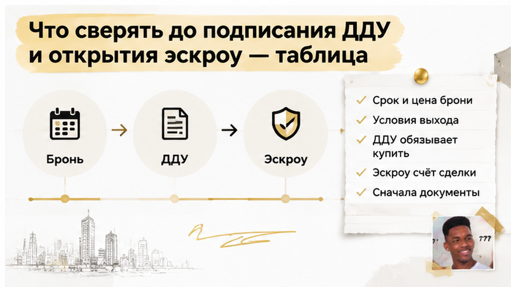

В середине сентября 2026 года семья с двумя детьми в Тюмени остановила покупку трёшки в новостройке на востоке города. До 1 октября оставалось 19 календарных дней, бронь была оплачена, а прежний расчёт семейной ипотеки выглядел рабочим: льготная часть до 6 млн рублей под 6%, рыночный остаток, первоначальный взнос 20% и приемлемый платёж. Затем банк пересчитал лимит комбинированного кредита — собственных средств уже не хватило. Деньги на эскроу не ушли: семья решила сначала проверить новые цифры.
Я — Святослав Шакин, The Риэлтор в Тюмени. В Telegram разбираю такие ситуации по ходу сделки. Короткие обновления и связь есть также в MAX.
Семья выбрала трёхкомнатную квартиру в новом доме на востоке Тюмени. После предварительного одобрения покупатели внесли плату за бронь, чтобы зафиксировать лот, пока банк проверял документы, а застройщик готовил сделку.
В расчёте менеджера схема выглядела спокойно: до 6 млн рублей приходилось на льготную часть семейной ипотеки по ставке до 6%, всё выше — на рыночный хвост комбо-кредита. При первоначальном взносе 20% ежемесячный платёж вписывался в семейный бюджет.
Но предварительное решение не является кредитным договором и не гарантирует, что банк выдаст именно такую сумму на конкретную квартиру. До финального решения он может повторно проверить доходы, действующие кредиты, долговую нагрузку, срок действия одобрения, объект и застройщика.
Поэтому расчёт менеджера остаётся ориентиром, а не основанием без оговорок подписывать ДДУ. Даже одобрение ипотеки ещё не означает, что эскроу откроют.
Пока шли проверка застройщика, согласование квартиры и сбор документов, семья планировала подписать ДДУ, зарегистрировать его, открыть эскроу и получить кредит на согласованных условиях. Бронь при этом уже запускала отдельный календарь: её договор определяет срок фиксации квартиры, цену и последствия отказа.

Обновлённые цифры пришли в середине сентября. До 1 октября оставалось 19 календарных дней, поэтому легко было решить, будто банк уже изменил условия семейной ипотеки из-за будущих нововведений.
Однако банк пересмотрел допустимый лимит комбинированного кредита. Изменилась доступная сумма финансирования, а рыночную часть пересчитали с учётом актуальной финансовой картины семьи.
На 12 сентября 2026 года параметры семейной ипотеки для Тюмени оставались прежними: ставка до 6%, первоначальный взнос от 20%, льготная часть до 6 млн рублей для регионов вне Москвы и Санкт-Петербурга. Общий лимит комбо-кредита для таких регионов составлял до 15 млн рублей. Минфин говорил, что решение о совершенствовании программы будет принято не ранее 1 октября. Это не означало, что правила уже поменялись.
Причину пересчёта нельзя автоматически связывать с календарём. На неё могли повлиять срок действия предварительного решения, повторная проверка доходов и обязательств, параметры квартиры или застройщика, внутренняя оценка банка, структура комбо-ипотеки. Точный ответ можно получить только из письменного расчёта и пояснения банка.
Льготная ставка могла сохраниться для своей части кредита, но общая сумма финансирования уменьшилась либо рыночный хвост стал больше. Тогда пришлось бы увеличивать первоначальный взнос, искать квартиру дешевле или принимать платёж за пределами бюджета.
Фраза «семейную ипотеку одобрили» не отвечала на главный вопрос: можно ли уже подписывать ДДУ на эту квартиру. Сначала требовалось подтвердить сумму кредита, первоначальный взнос и ежемесячный платёж.
Похожая осторожность нужна, когда после одобрения меняется ставка и растёт платёж. Название программы или рекламная ставка не показывают всей стоимости сделки.
Семья не стала переводить деньги на эскроу по старому сценарию. Оформление попросили остановить, пока банк не подтвердит обновлённые условия. Плата за бронь не превращается автоматически в эскроу и не гарантирует полный возврат — всё зависит от отдельного договора с застройщиком.
Проверять нужно также документы по самой сделке. В практике встречается ситуация, когда застройщик меняет юридическое лицо и присылает дольщикам новый ДДУ.

В семейной ипотеке «под 6%» оплачивается не вся квартира. Для Тюмени льготная часть ограничена шестью миллионами рублей, а остаток оформляется по рыночной ставке. Поэтому итог зависит от льготного лимита, рыночного хвоста, первоначального взноса и будущего платежа.
У семьи схема выглядела спокойно: трёхкомнатная квартира, 20% собственных средств, до шести миллионов под ставку до 6%, остальное — по рыночной. Платёж укладывался в привычный коридор, за квартиру внесли бронь и начали готовить сделку.
Перед ДДУ банк может заново проверить доходы, кредиты, лимиты по картам, долговую нагрузку, объект и застройщика. ПДН показывает, какая часть дохода уже уходит на обязательные платежи. Если нагрузка окажется выше допустимой, банк уменьшит общий лимит, изменит условия или потребует больший взнос.
На 12 сентября 2026 года официальными ориентирами для Тюмени оставались ставка до 6%, взнос от 20%, льготная часть до шести миллионов и общий региональный лимит до 15 миллионов рублей. Это параметры программы, а не обещание конкретного банка сохранить прежний расчёт до сделки. Возможные изменения после 1 октября нельзя автоматически считать причиной пересмотра.
Причину изменения нужно запросить письменно. Ею могли стать срок действия предварительного решения, повторная оценка доходов и обязательств, параметры квартиры или застройщика, внутренние правила банка либо их сочетание.
Новый расчёт показал: прежняя комбинация больше не сходится. Допустимая сумма кредита изменилась, 20% стало недостаточно, а платёж оказался выше комфортного для семьи.

Теперь требовалось знать, какая сумма подтверждена, каков новый первоначальный взнос и сколько семья будет платить после подписания кредитного договора.
Семья заново сопоставила доходы, действующие платежи, собственные деньги и цену квартиры. В старом сценарии 20% хватало, новый платёж уже не помещался в бюджет. Подписывать ДДУ на прежних условиях не стали.
Предварительное одобрение — решение по заёмщику на определённых условиях. ДДУ — обязательство купить конкретную квартиру. Эскроу — счёт, на который деньги поступают в рамках оформленной сделки. Пока кредитный договор не подтверждён, одно автоматически не превращается в другое.
Бронь оформляется отдельно. Она фиксирует квартиру на время подготовки документов, не является первоначальным взносом, не заменяет эскроу и не обязывает банк сохранить прежний лимит. В договоре нужно проверить срок фиксации, цену и порядок отказа. Бронь может сгореть полностью или частично.
Потерять плату неприятно — взять кредит с неподъёмным платежом гораздо опаснее. Остановка до ДДУ и открытия эскроу оставляла варианты: проверить новый расчёт, увеличить взнос, выбрать более дешёвую квартиру или отказаться от сделки.
Нужен один актуальный письменный сценарий с суммой кредита, первоначальным взносом и ежемесячным платежом. Важно подтвердить одобрение именно объекта и застройщика: решение по заёмщику само по себе не означает автоматического одобрения квартиры.
В результате семья остановила оформление до подписания ДДУ. Деньги на эскроу не ушли, вопрос с бронью остался в рамках отдельного договора. Причиной стала не отмена семейной ипотеки, а то, что конкретная комбинация лимита, взноса и платежа перестала сходиться.

Квартира и цена оставались прежними, но после пересчёта банка кредит и первоначальный взнос уже не складывались. Терять бронь жалко, подписывать документы при неподъёмном платеже ещё хуже.
Плата за бронь — не деньги на эскроу и не первоначальный взнос. Семья остановилась до подписания ДДУ и кредитного договора.
Сначала нужно открыть договор бронирования, проверить срок, цену и условия отказа банка или нехватки первоначального взноса. Ответы должны быть в договоре, а не только в словах менеджера.
Семья запросила письменный расчёт банка и сверила его с бронью. После этого можно выбирать другой лот, увеличивать взнос или выходить из сделки по договору.
Банк пересчитал лимит семейной ипотеки за три недели до ДДУ — вы бы подписали договор по старому расчёту менеджера или развернулись, даже если бронь сгорит?


Перед подписанием соберите актуальный расчёт банка, договор бронирования и документы по квартире. Нужен единый сценарий, а не старое одобрение рядом с новым платежом.
| Что проверяем | Что сверить | Где уточнить | Что должно быть понятно до ДДУ |
|---|---|---|---|
| Срок решения | Актуально ли решение банка к подписанию | Запросить подтверждение у банка | Можно ли идти на сделку с этим решением |
| Сумма кредита и ПВ | Хватает ли кредита и первоначального взноса | Сопоставить расчёт банка с ценой в брони | Сходится ли вся сумма покупки |
| Структура комбо | Как распределены льготная и рыночная части | Проверить актуальный расчёт | Какую структуру банк подтверждает |
| Платёж и ПДН | Какой платёж получился после пересчёта | Сверить с семейным бюджетом | Помещается ли новый платёж |
| Объект и застройщик | Проверены ли квартира и застройщик | Сверить документы с подтверждением банка | Относится ли расчёт к этому объекту |
| Бронь, ДДУ, эскроу | Срок брони, цену и условия выхода | Прочитать договор бронирования | Что семья теряет при остановке |
Отдельно попросите подтвердить структуру комбо. В Тюмени льготная часть может составлять до шести миллионов рублей, а остаток по более дорогой квартире идёт по рыночной ставке. Обещание «семейная ипотека под 6%» не показывает весь ежемесячный платёж.
Выбрали новостройку в Тюмени, а расчёт банка изменился? Напишите мне в Telegram или MAX. Разберём, что уточнить до подписания.
Запросите у банка письменное подтверждение лимита до ДДУ: сумму кредита, первоначальный взнос и платёж. Не переводите деньги на эскроу, пока эти цифры не сходятся в одном актуальном сценарии.
Эта семья остановилась до эскроу и сохранила возможность пересобрать сделку либо отказаться от неё на условиях договора. Сначала подтверждённые документы. Потом подпись.